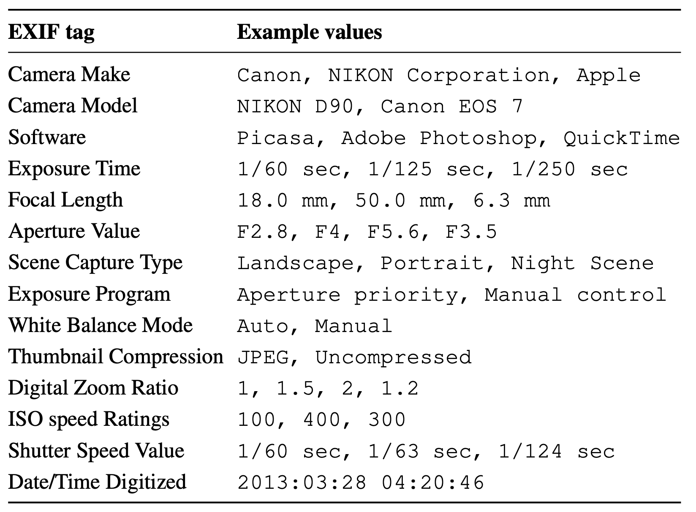
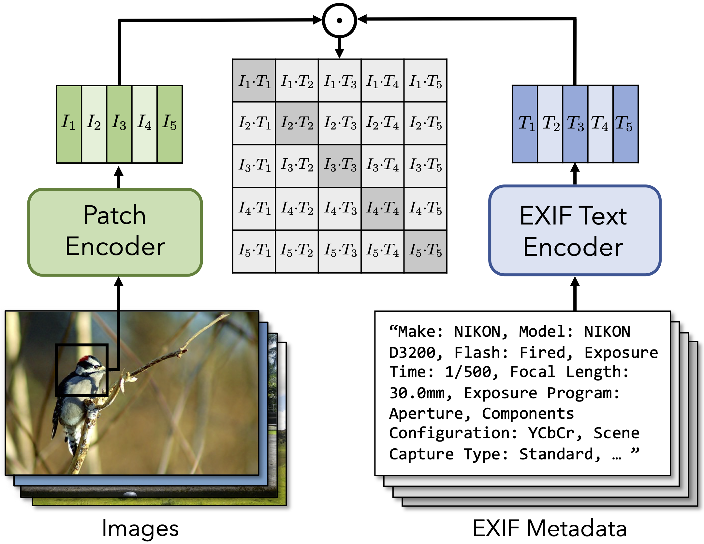

In this paper, we learn visual representations that convey camera properties by creating a joint embedding between image patches and photo metadata. This model treats metadata as a language-like modality: it converts EXIF tags that compose the metadata into a long piece of text,
and processes it using an off-the-shelf model from natural language processing. We demonstrate the effectiveness of our learned features on a variety of downstream tasks that require an understanding of low-level imaging properties, where it outperforms other feature representations.
In particular, we successfully apply our model to the problem of detecting image splices "zero shot", by clustering the crossmodal embeddings within an image.
Cross-modal Training
Photo metadata for each image (EXIF file) is a freely available but often ignored signal that can be used to learn camera property from images. We propose to treat EXIF tags as language and use multimodal contrative learning techniques to associate images with their metadata.

Common EXIF tags and example values

Cross-modal image and photo metadata training
Application on image forensics
After learning cross-modal representations from images and photo metadata, we can use them for various downstream tasks that require an understanding of camera properties. Here we use application in image forensics as an example.

Acknowledgements
We thank Ziyang Chen, Yuexi Du for the helpful discussions.
The webpage template was adopted from
Colorization project and
HOGgles project.